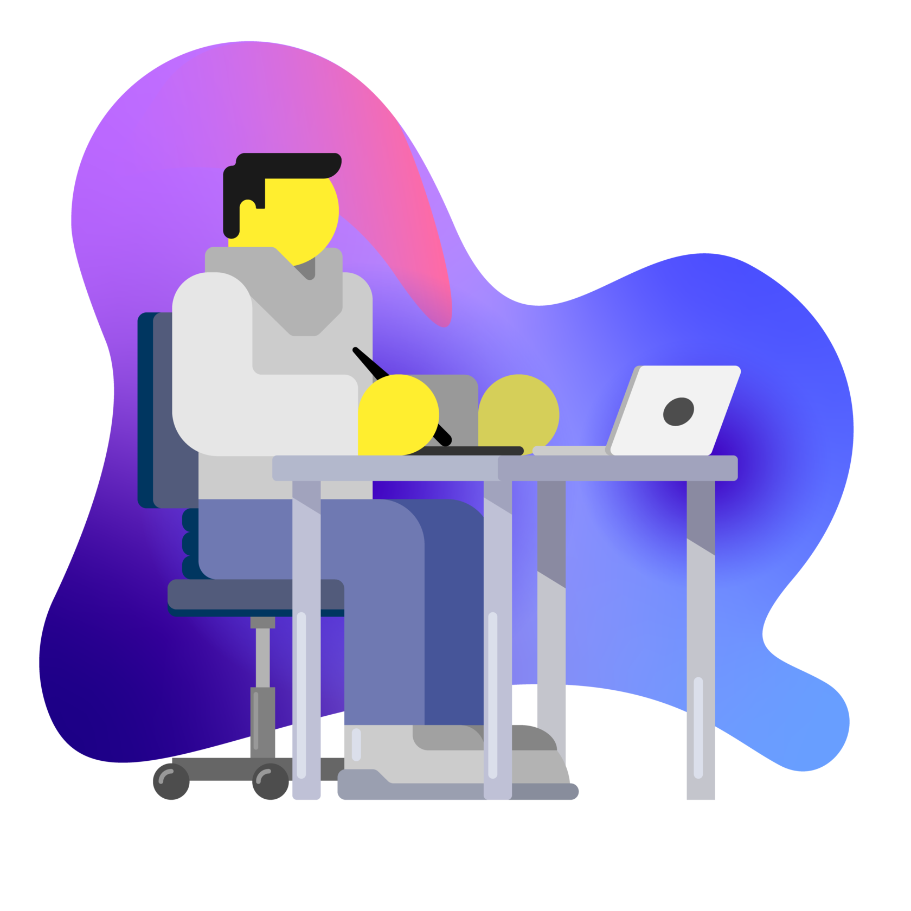

Дизайн,который вы полюбите
заполни форму и получи индивидуальный дизайн:
Услуги
Онлайн
Офлайн
Брендинг
Наши работы
SOLCORE.DESIGN
Это одна из наших лучших работ — собственная группа в VK."ИКОНКИ ПРИЛОЖЕНИЙ"
Разработка нескольких иконок для приложений на телефоны. Кликабельность повышена на 20%!"СЕМЕЙНЫЙ ЛОГОТИП"
Логотип, который будет служить семейной реликвией для нашего заказчикаУпаковка для суперфудов
Тут могла быть ваша работа
Тут могла быть ваша работа
Тут могла быть ваша работа
Тут могла быть ваша работа
Тут могла быть ваша работа
Тут могла быть ваша работа
Тут могла быть ваша работа
Отзывы
Константин
Делали логотип для одного бизнес канала по цене среднего пакета. Пришли с готовой
концепцией логотипа, желаемым. Рисовка затянулась на полторы недели, т.к. не могли найти именно того
персонажа, что бы лучше всего подходил как лицо канала, и не до конца определились со способом разработки
логотипа.
Но в итоге нашли самый-самый вариант, оперативно получили лого в стиле полигон.
Логотипы делаются быстро, с заказчиками общение вежливое и с максимальным пониманием. За свою цену
достаточно хорошая работа. Однозначно рекомендую к сотрудничеству.
Артем
Для мобильного приложения хорошая иконка это 70% конверсии из просмотра страницы
приложения в инсталл. Поэтому нет нужды говорить о важности хорошей графики для мобильного приложения.
Ребята со всей ответственностью и креативом подошли к разработке графики для моих приложений, в процессе
работы всегда на связи, необходимые коррективы и доработки вносят очень оперативно. Качеством графики я
доволен, впрочем. как и сотрудничеством в общем. Работаем дальше. Однозначно рекомендую.
Максим
solcore.design - ребята нарисовали нам классный макет, хочу сказать спасибо за
проделанную работу. Макет логотипа действительно очень крутой, стилистика полностью нам подходит. Сначала
я думал, что очень сложно что-то подобрать и придумать так, чтобы это мне подошло, даже и не думал что у
ребят это получится. Вы превзошли мои ожидания, ещё раз спасибо! Рекомендую.